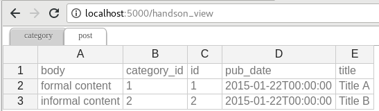

Flask-Excel - 格式万变，数据不变¶
- 作者
C.W.
- 源文件
- 提交问题
- 许可证
New BSD License
- 发布的版本
0.0.7
- 文档生成日期
Nov 09, 2020
以下是一段典型的开发人员和用户的对话:
用户: "我上传了一个 excel 文件但是你的网页说文件格式不支持。"
开发人员: "哪你上传的是 xlsx 格式还是 csv 格式？"
用户: "嗯，我不清楚。总之，我用的微软的 Excel 存的文件。哪一定是 excel 文件啦！"
开发人员: "嗨，事情是这样：从第一天开始，你就没有告诉我要支持所有的 excel 格式。"
"要么，将就一下。要么，把项目推迟 N 天。"
Flask-Excel 是基于 pyexcel 软件库。它的使命是让大家 在网站开发的时候，轻松的在数据存成 excel 文件让用户下载和处理用户上传的 excel 文件。 它可以把 excel 数据转换成二维数组，一维的字典数组和以excel 单页名为关键字，二维数组为值的字典；反之亦然。 这样的话，任由文件格式变化，你都可以在以下三个场景自由做数据转换:
excel 文件上传和下载
数据库输入输出
excel 数据分析和存储
同时，Flask-Excel 有以下两个保证:
不管是任何文件格式，函数界面不变
不管是数据存在哪里，函数界面不变
那么你就可以专注基于 Flask 的网站开发了。
最开始的时候，作者遇到一个可用性的问题：当一个简单的 excel 处理的网页交到用户手上的时候， 这些用户，像行政助理，人力资源管理人员，老会抱怨网页不好用。事实上，并不是所有人都知道 csv, xls, xslx 各有什么区别。与其花时间教育用户相关的微软办公室软件的用法，不如把 人类已知 excel 都给支持一下好了。同时为了在不修改代码情况下，我们能够通过装一个 插件就不一个新的 excel 格式支持了，pyexcel 的编程界面做了很好的抽象处理。在 整个 Python 社区，作者希望此软件包成为给 pandas 跑龙套的小包包。
可圈可点的性能：
为 excel 数据导入数据库和从数据库输出数据为 excel 格式提供一站式服务
把上传的 excel 文件直接转换成 Python 数据结构
把 Python 数据结构转换为 excel 文件让用户下载
在服务器里，把数据存成 excel 文件
支持 csv, tsv, csvz, tsvz 格式。其他格式有以下软件包支持：
包包名字 |
文件格式 |
依赖 |
|---|---|---|
xls, xlsx(read only), xlsm(read only) |
||
xlsx |
||
ods |
pyexcel-ezodf, lxml |
|
ods |
包包名字 |
文件格式 |
依赖 |
|---|---|---|
xlsx(write only) |
||
xlsx(write only) |
||
xlsx(read only) |
lxml |
|
xlsb(read only) |
pyxlsb |
|
read only for ods, fods |
lxml |
|
write only for ods |
loxun |
|
html(read only) |
lxml,html5lib |
|
pdf(read only) |
camelot |
插件使用指南¶
从2020年开始，所有 pyexcel-io 的插件都需要至少 python 3.6 了。如果需要支持以前的 python 版本，请继续使用 0.5.x 。
除了 csv 文件， xls, xlsx 和 ods 文件都是一个压缩文件。里面都是 xml 文件。
只有专门的读写插件可以边读边用或者边转换边写。
如果管理所有已经装上了的插件呢？很简单，你可以用 pip 添加需要的插件，或者卸载不需要的插件。 如果你有不同的项目，而且项目的依赖不一样，作者推荐用 python 的 venv 来给你的每一个项目创建 一个新的虚拟 python 环境。有个别情况，两个插件需要共存，比如 pyexcel-ods 和 pyexcel-odsr， 前者可以写 ods 文件，但你需要后者来读 ods 文件。在这种情形下呢，你可以用 library 变量， 比如 get_array(‘my.ods’, library=’pyexcel-odsr’)。
包包名字 |
文件格式 |
依赖 |
Python 版本 |
|---|---|---|---|
write only:rst, mediawiki, html, latex, grid, pipe, orgtbl, plain simple read only: ndjson r/w: json |
2.6, 2.7, 3.3, 3.4 3.5, 3.6, pypy |
||
handsontable in html |
same as above |
||
svg chart |
2.7, 3.3, 3.4, 3.5 3.6, pypy |
||
sortable table in html |
same as above |
||
gantt chart in html |
except pypy, same as above |
Footnotes
安装¶
你可以通过 pip 安装 Flask-Excel ：
$ pip install Flask-Excel
或者复制到本地再安装：
$ git clone https://github.com/pyexcel-webwares/Flask-Excel.git
$ cd Flask-Excel
$ python setup.py install
每个插件的安装方法都有各自的文档。拿 xlsx 为例，你需要装 pyexcel-xlsx
$ pip install pyexcel-xlsx
配置¶
In your application, you must import it before using it:
import flask_excel as excel
...
excel.init_excel(app) # required since version 0.0.7
Quick start¶
A minimal application may look like this:
The tiny application exposes four urls:
one for file upload
three urls for file download.
The first url presents a simple file upload html and responds back in json with the content of the uploaded file. Here is an example file for testing but you can upload any other excel file. The file upload handler uses request.get_array to parse the uploaded file and gets an array back. The parameter file is coded in the html form:
<input ... name=file>
Warning
If ‘field_name’ was not specified, for example request.get_array(‘file’) in upload_file() function, your browser would display “Bad Request: The browser (or proxy) sent a request that this server could not understand.”
The rest of the links simply throw back a csv file whenever a http request is made to
http://localhost:50000/download/. make_response_from_array() takes a
list of lists and a file type as parameters and sets up the mime type of the
http response. If you would like to give ‘tsvz’ a go, please change “csv” to
“tsvz”.
更多的文件格式¶
实例项目支持 csv, tsv 和他们的压缩版本: csvz and tsvz. 如果你需要其他的格式支持， 请参照:ref:file-format-list，你可以装一个或所有的:
pip install pyexcel-xls
pip install pyexcel-xlsx
pip install pyexcel-ods
Data import and export¶
Continue with the previous example, the data import and export will be explained. You can copy the following code in their own appearing sequence and paste them after the place holder:
# insert database related code here
Alternatively, you can find the complete example on github
Now let’s add the following imports first:
from flask_sqlalchemy import SQLAlchemy # sql operations
And please make sure that you have pyexcel-xls and pyexcel-handsontable installed:
pip install pyexcel-xls, pyexcel-handsontable
Now configure the database connection. Sqllite will be used and tmp.db will be used and can be found in your current working directory:
app.config['SQLALCHEMY_DATABASE_URI'] = 'sqlite:///tmp.db'
db = SQLAlchemy(app)
And paste some models from Flask-SQLAlchemy’s documentation:
Now let us create the tables in the database:
Write up the view functions for data import:
In the code, category_init_func and post_init_func are custom initialization functions for Category and Post respectively. In the situation where you want to skip certain rows, None should should be returned and flask_excel will ignore the row.
Write up the view function for data export:
Then run the example again. Visit http://localhost:5000/import and upload sample-data.xls.
And it responds with
This result is rendered via pyexcel-handsontable. All you needed is to put ‘handsontable.html’ as file type:
Then visit http://localhost:5000/export to download the data back.
Export filtered query sets¶
Previous example shows you how to dump one or more tables over http protocol.
Hereby, let’s look at how to turn a query sets into an excel sheet. You can
pass a query sets and an array of selected column names to
make_response_from_query_sets() and generate an excel sheet from it:
Then visit http://localhost:5000/custom_export to download the data .. _data-types-and-its-conversion-funcs:
所有支持的数据结构¶
示例应用展示了数列，并不代表只有数列，其他的数据结构也是支持的。 以下是所有的数据结构列表:
data structure |
from file to data structures |
from data structures to response |
|---|---|---|
dict |
||
records |
||
a list of lists |
||
dict of a list of lists |
||
|
||
|
||
database table |
||
a list of database tables |
||
a database query sets |
||
a generator for records |
|
|
a generator of lists |
|
需要更多信息的话，可以参照 pyexcel documentation


函数参考¶
Flask-Excel attaches pyexcel functions to Request class.
ExcelRequest¶
-
flask_excel.ExcelRequest.get_sheet(field_name=None, sheet_name=None, **keywords)¶ - Parameters
field_name – the file field name in the html form for file upload
sheet_name – For an excel book, there could be multiple sheets. If it is left unspecified, the sheet at index 0 is loaded. For ‘csv’, ‘tsv’ file, sheet_name should be None anyway.
keywords – additional keywords to
pyexcel.get_sheet()
- Returns
A sheet object
The following html form, the field_name should be “file”:
<!doctype html> <title>Upload an excel file</title> <h1>Excel file upload (csv, tsv, csvz, tsvz only)</h1> <form action="" method=post enctype=multipart/form-data><p> <input type=file name=file><input type=submit value=Upload> </form>
-
flask_excel.ExcelRequest.get_array(field_name=None, sheet_name=None, **keywords)¶ - Parameters
field_name – same as
get_sheet()sheet_name – same as
get_sheet()keywords – additional keywords to pyexcel library
- Returns
a two dimensional array, a list of lists
-
flask_excel.ExcelRequest.get_dict(field_name=None, sheet_name=None, name_columns_by_row=0, **keywords)¶ - Parameters
field_name – same as
get_sheet()sheet_name – same as
get_sheet()name_columns_by_row – uses the first row of the sheet to be column headers by default.
keywords – additional keywords to pyexcel library
- Returns
a dictionary of the file content
-
flask_excel.ExcelRequest.get_records(field_name=None, sheet_name=None, name_columns_by_row=0, **keywords)¶ - Parameters
field_name – same as
get_sheet()sheet_name – same as
get_sheet()name_columns_by_row – uses the first row of the sheet to be record field names by default.
keywords – additional keywords to pyexcel library
- Returns
a list of dictionary of the file content
-
flask_excel.ExcelRequest.get_book(field_name=None, **keywords)¶ - Parameters
field_name – same as
get_sheet()keywords – additional keywords to pyexcel library
- Returns
a two dimensional array, a list of lists
-
flask_excel.ExcelRequest.get_book_dict(field_name=None, **keywords)¶ - Parameters
field_name – same as
get_sheet()keywords – additional keywords to pyexcel library
- Returns
a two dimensional array, a list of lists
-
flask_excel.ExcelRequest.save_to_database(field_name=None, session=None, table=None, initializer=None, mapdict=None ** keywords)¶ - Parameters
field_name – same as
get_sheet()session – a SQLAlchemy session
table – a database table
initializer – a custom table initialization function if you have one
mapdict – the explicit table column names if your excel data do not have the exact column names
keywords – additional keywords to
pyexcel.Sheet.save_to_database()
-
flask_excel.ExcelRequest.isave_to_database(field_name=None, session=None, table=None, initializer=None, mapdict=None ** keywords)¶ similar to
:meth:`~flask_excel.ExcelRequest.isave_to_database(). But it requires less memory.This requires column names must be at the first row.
-
flask_excel.ExcelRequest.save_book_to_database(field_name=None, session=None, tables=None, initializers=None, mapdicts=None, **keywords)¶ - Parameters
field_name – same as
get_sheet()session – a SQLAlchemy session
tables – a list of database tables
initializers – a list of model initialization functions.
mapdicts – a list of explicit table column names if your excel data sheets do not have the exact column names
keywords – additional keywords to
pyexcel.Book.save_to_database()
-
flask_excel.ExcelRequest.isave_book_to_database(field_name=None, session=None, tables=None, initializers=None, mapdicts=None, **keywords)¶ similar to
:meth:`~flask_excel.ExcelRequest.isave_book_to_database(). But it requires less memory.This requires column names must be at the first row in each sheets
Response methods¶
-
flask_excel.make_response(pyexcel_instance, file_type, status=200, file_name=None)¶ - Parameters
pyexcel_instance –
pyexcel.Sheetorpyexcel.Bookfile_type –
one of the following strings:
’csv’
’tsv’
’csvz’
’tsvz’
’xls’
’xlsx’
’xlsm’
’ods’
status – unless a different status is to be returned.
file_name – provide a custom file name for the response, excluding the file extension
-
flask_excel.make_response_from_array(array, file_type, status=200, file_name=None)¶ - Parameters
array – a list of lists
file_type – same as
make_response()status – same as
make_response()file_name – same as
make_response()
-
flask_excel.make_response_from_dict(dict, file_type, status=200, file_name=None)¶ - Parameters
dict – a dictionary of lists
file_type – same as
make_response()status – same as
make_response()file_name – same as
make_response()
-
flask_excel.make_response_from_records(records, file_type, status=200, file_name=None)¶ - Parameters
records – a list of dictionaries
file_type – same as
make_response()status – same as
make_response()file_name – same as
make_response()
-
flask_excel.make_response_from_book_dict(book_dict, file_type, status=200, file_name=None)¶ - Parameters
book_dict – a dictionary of two dimensional arrays
file_type – same as
make_response()status – same as
make_response()file_name – same as
make_response()
-
flask_excel.make_response_from_a_table(session, table, file_type, status=200, file_name=None)¶ Produce a single sheet Excel book of file_type
- Parameters
session – SQLAlchemy session
table – a SQLAlchemy table
file_type – same as
make_response()status – same as
make_response()file_name – same as
make_response()
-
flask_excel.make_response_from_query_sets(query_sets, column_names, file_type, status=200, file_name=None)¶ Produce a single sheet Excel book of file_type from your custom database queries
- Parameters
query_sets – a query set
column_names – a nominated column names. It could not be None, otherwise no data is returned.
file_type – same as
make_response()status – same as
make_response()file_name – same as
make_response()
-
flask_excel.make_response_from_tables(session, tables, file_type, status=200, file_name=None)¶ Produce a multiple sheet Excel book of file_type. It becomes the same as
make_response_from_a_table()if you pass tables with an array that has a single table- Parameters
session – SQLAlchemy session
tables – SQLAlchemy tables
file_type – same as
make_response()status – same as
make_response()file_name – same as
make_response()